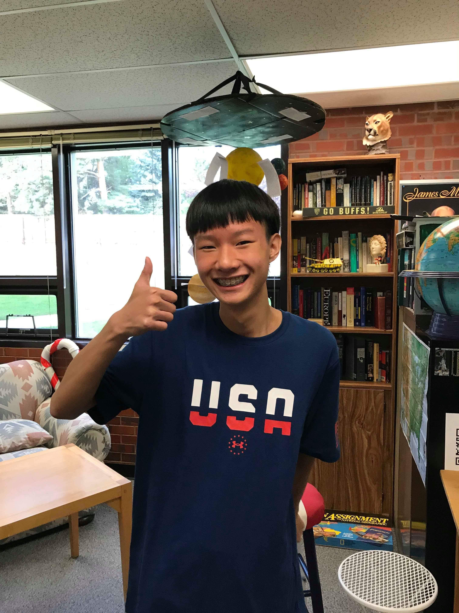
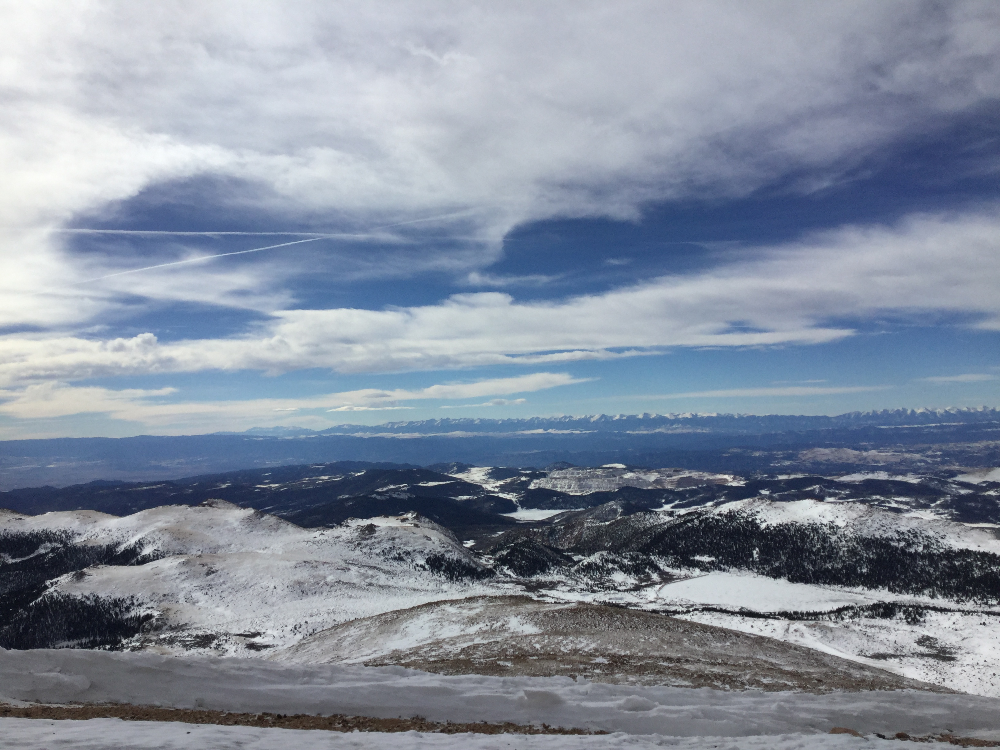

Goals!

Thumbs Up! :)
Pikes Peak picture that I took in 2014!
Everyday Goals:
1. Help People Out: I like to help other people out whenever they feel lost and I will explain things
clearly so they will understand it thoroughly.
2. Communicate: I am good at communicating with others, I never exclude anyone.
3. Building Long Lasting Relationships: I will be a good mentor and I will chat with them when they're feeling lonley or down.
4. I will make good choices as a student.
5. Never Give Up: I will be completing the education as a first student to go to college in the U.S.